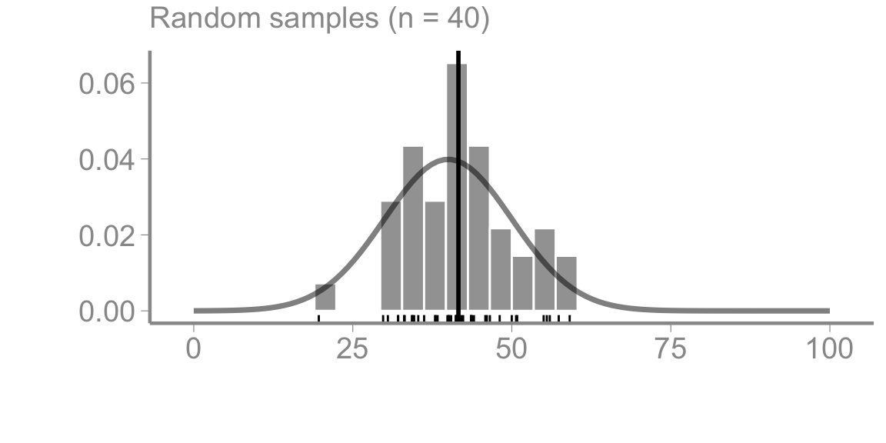
FANR 6750
Fall 2026
Experiments are often treated as the only way to infer cause and effect
In this lecture, we will discuss why experiments can improve causal inference and the elements of experimental design that must be considered for this objective. Specifically, we will discuss:
Types of experiments
Elements of experimental design
Causal inference
What is an experiment?
A scientific procedure undertaken to make a discovery, test a hypothesis, or demonstrate a known fact
Generally, experiments fall into one of three types:
Manipulative experiment
Quasi-experiment
Mensurative experiment (i.e., observational)
The principles discussed in this lecture are important for understanding the differences between these types, and the limitations of each
Regardless of type, all experiments require:
Hypothesis
Experimental design
Experimental execution
Statistical analysis
Interpretation
Which of these do you think is most important? Which takes the most time?
What is experimental design?
The number, type, and arrangement of experimental units
The number and type of treatments
The assignment of treatments to experimental units
The response variables that will be measured
If the goal of experiments is to test a hypothesis, a good experiment must:
Isolate the effects of the hypothesized treatment variables from other sources of variation2
Have a reasonable chance of detecting a treatment effect, if one exists3
The first goal can be generally be met by careful consideration of:
Replication
Randomization
Controls
We will discuss the second goal in another lecture
Imagine we are interested in whether predation by birds reduces the abundance of phytophagous insects on trees
To test this hypothesis, we place an wire exclosure around one tree and leave the neighboring tree unmanipulated. We then collect 10 branches from each tree, count the number of insects on each branch, and calculate the average number of insects per branch on each tree
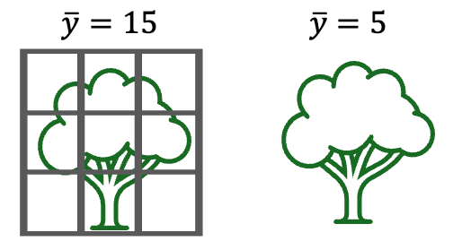
Question: Can these samples test the hypothesis that birds influence insect abundance?
This design is inadequate for testing our hypothesis because it is unreplicated (among other reasons)
Why is replication important?
Experimental units will differ from one another, or from their expected value, for many reasons
Without replication, our treatment will always be confounded with other sources of variation
Due to this confounding, it is impossible to conclude whether observed differences are due to the treatment
Replication is critical because it allows us to quantify how much variation there is between treatments relative to all the other sources of variability
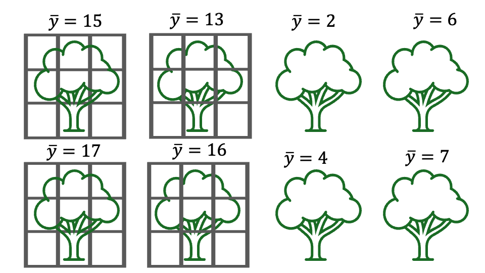
If differences among treatment groups are larger than differences within groups, we are more confident about the treatment effect
We will return to this idea throughout the semester, as it is key to interpreting the output of statistical models
Replication is necessary for any type of experiment (manipulative, quasi-experiments, observational)
How does replication help with confounding?
Question: Can these samples test the hypothesis that birds influence insect abundance?
Replication is necessary, but not sufficient, to remove confounding
Replication, when combined with randomization, helps to ensure that treatment effects are not confounded with other sources of variation
For this reason, randomization is arguably the most important component of a good experiment!
There are two elements to randomization:
Helps to ensure[^But does not guarantee!] that the sample is representative of population
Critical for all types of experiments
Helps to ensure[^But does not guarantee!] that treatment effects are not confounded with other sources of variability
Not possible in quasi-experiments or observational studies. What is the consequence?
As discussed previously, samples (and the statistics calculated from samples) allow us to learn about populations
Sample statistics will only provide accurate (i.e., unbiased) estimates of population parameters if the sample is representative of the population we are trying to study
Random selection of experimental units is one way to generate samples that are representative of the population

Sample statistics from truly randomized sampling provide unbiased estimators of population parameters
In this context, unbiased simply means that, on average, the sample statistics are expected to be equal to the population parameters
\[E[\bar{y}] = \mu\]
But this statistical expectation does not mean that the statistics from any particular sample will be equal to the population parameters, only that the sample statistics are no more likely to overestimate than to underestimate the population parameters
In our previous example, imagine we could only reach branches near the bottom of the trees, so all of our samples came from this region
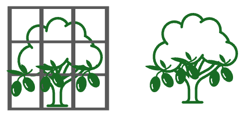
Are these samples sufficiently randomized?
How could we revise our protocol to achieve a more representative sample?
In some cases, completely random sampling is not sufficient to obtain representative samples
Example: Suppose the study area where we are conducting our exclosure experiments is composed of both oak and fir trees. We have enough money to build 10 exclosures so we randomly select 10 trees to receive the treatment
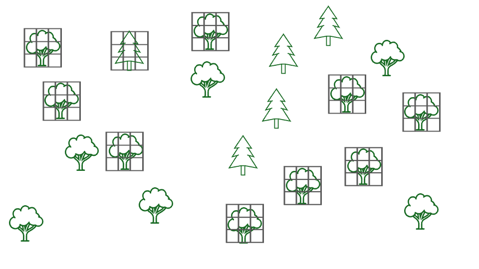
Questions: What is the “population” in this example? Are these samples likely to representative of that population?
In cases where sampling units can be divided into discrete groups, stratified random sampling is often used to ensure representative samples
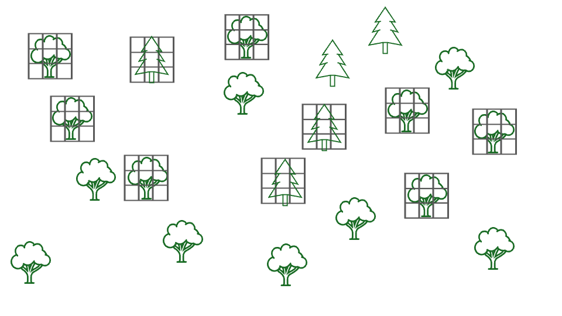
Stratified random sampling consists of:
Dividing sampling units into groups
Deciding how to allocate sampling effort across groups (often proportional to % of population)
Randomly selecting sampling units within each group
Stratified random sampling helps ensure that our sample, and corresponding sample statistics, are representative of the overall population
Also helps ensure that replication within groups is adequate to test for different responses across groups
Other types of sampling are also possible and sometimes used, including
Cluster sampling
Systematic sampling
See Quinn textbook (section 7.1.1) for more details
Random sampling is not always possible for a variety of reasons, including:
Logistical/financial constraints
Safety issues
Ethics
Questions:
Are there examples in your research where samples cannot be selected randomly?
What are the consequences of non-random sampling for statistical inference?
Random allocation of treatments to experimental units is also a critical aspect of experimental design
This form of randomization helps ensure that treatments are not confounded with other sources of variation. How? By reducing the chance that treatments are correlated with other sources of variation
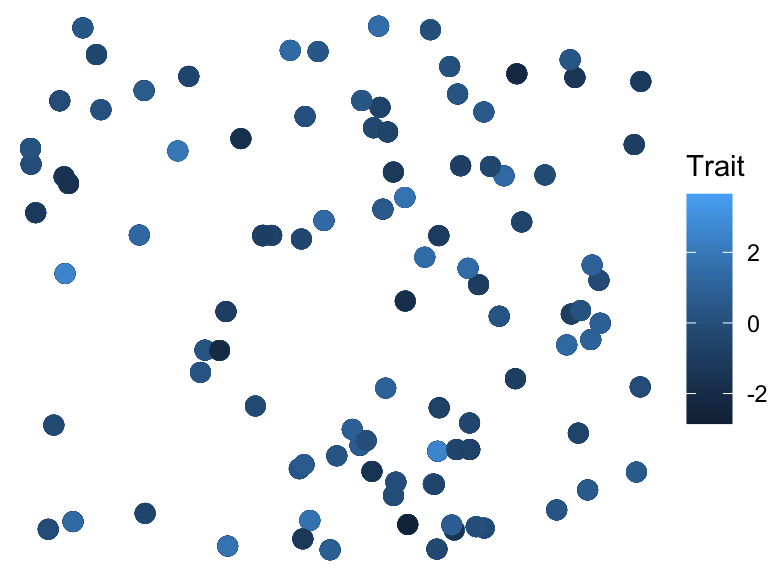
Random allocation of treatments to experimental units is also a critical aspect of experimental design
This form of randomization helps ensure that treatments are not confounded with other sources of variation. How? By reducing the chance that treatments are correlated with other sources of variation
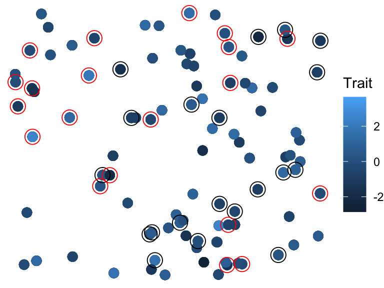
Random allocation of treatments to experimental units is also a critical aspect of experimental design
This form of randomization helps ensure that treatments are not confounded with other sources of variation. How? By reducing the chance that treaments are correlated with other sources of variation
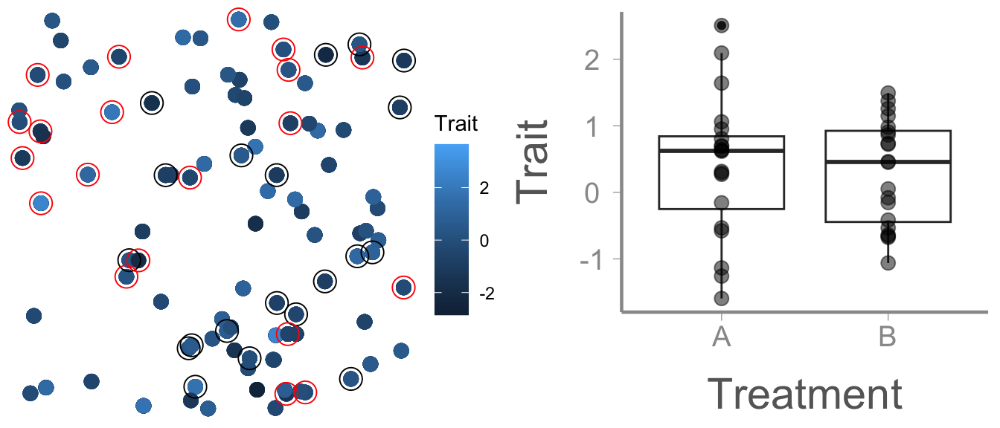
As before, randomized designs help reduce the risk of confounding, but do not guarantee it
It is important to note that randomization is a method for reducing for confounding, not a goal in and of itself
An example to illustrate the difference. Assume in our previous example that we randomly selected trees for the exclosure experiment and ended up with the following design:
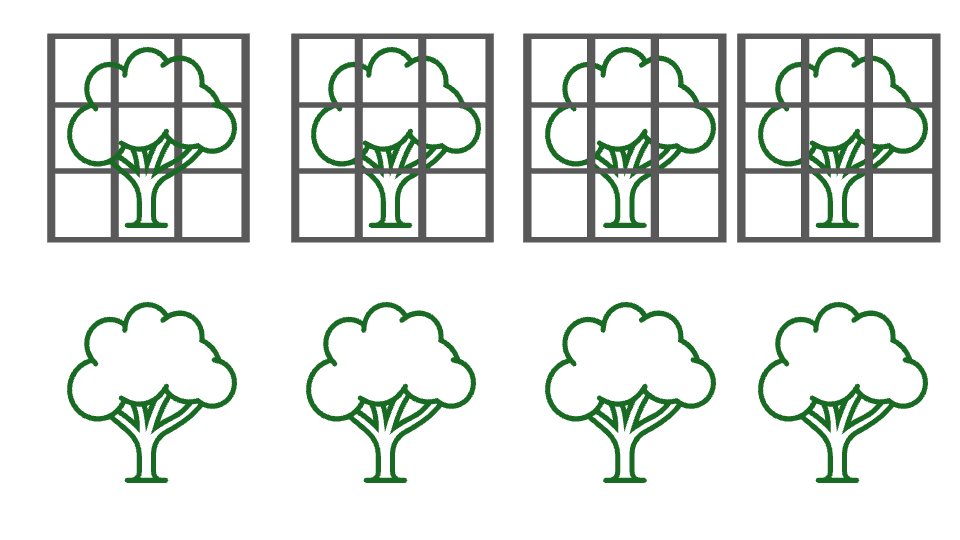
Questions: Is this a good experimental design? How should we proceed?
This design is random but it is not interspersed
Random sampling can result in clustered designs, especially with small sample sizes, that may violate the exchangeability assumption
How should we proceed? We could re-randomize…
Is this sample adequately interspersed? Is potential for confounding minimized?
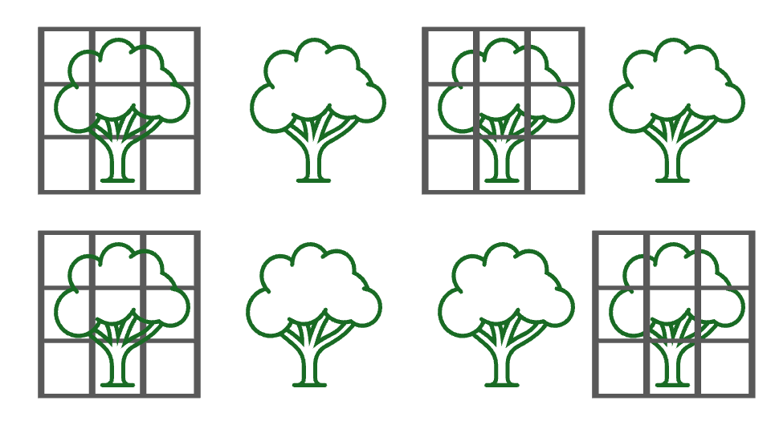
One risk of re-randomizing to achieve interspersion is that we risk re-randomizing until we get a design that “looks” random/interspersed
Do we still have a randomized design?
Pre-defined criteria can help reduce potential for randomizing your way to a non-randomized design
Another option is to use regular/systematic allocation of treatments
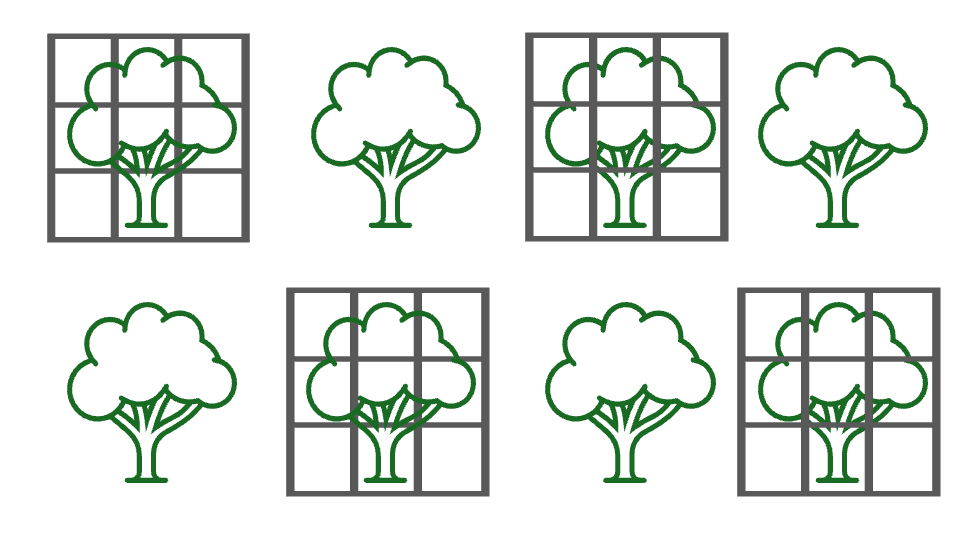
Systematic/regular allocation can be more appropriate to achieve adequate interspersion, but risks of confounding remain
Often, final design will be compromise between randomization, risk of confounding, and logistical constraints
No easy answer
Make decisions ahead of time, document process, and be transparent
In certain situations, confounding can be addressed statistically (more on this later)
Randomization helps meet both the exchangeability and positivity assumptions
Randomizing treatments breaks confounding
Because the probability of receiving a treatment is determined through the design, researchers can ensure all units have >0% chance of receiving each treatment[^Though in studies with small samples sizes, stochastic violations of positivity can still happen]
The final component of good experimental design that will discuss is the use of controls
If our goal is to determine whether a change in \(x\) causes a corresponding change in \(y\), controls allow us to answer the question:
What would happen to \(\large y\) if we didn’t change \(\large x\)?
This is the counterfactual we discussed in the previous lecture
Well-designed treatments and controls allow us to estimate both potential outcomes of our treatment[^When combined with adequate replication and randomization]
True controls are generally hard to accomplish in observational studies. Why?
Example: We are interested in whether two closely related salamander species compete with each other. To test this, we establish study plots and count the number of individuals of the focal species in each plot. After four years, we randomly select half the plots and remove all individuals of the other species. We then monitor abundance of the focal species for 4 more years (ensuring no individuals of the other species re-colonize the plots)
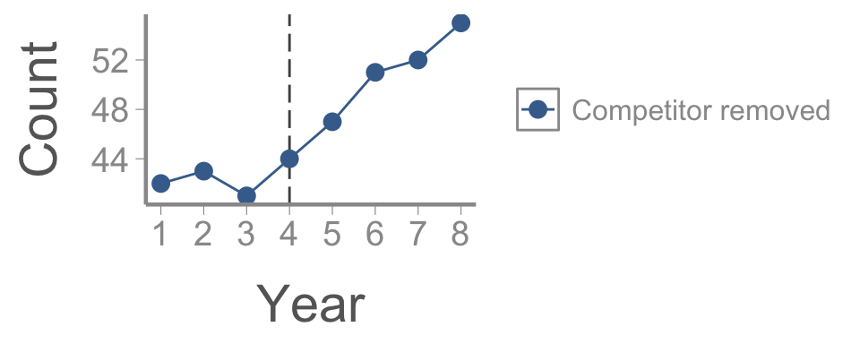
Question: Does our data provide evidence that the species compete?
Although it seems clear that abundance increased after the competitor was removed, we do not know what would have happened if we hadn’t remove the competitor (i.e., the counterfactual)
The plots where the competitor wasn’t removed serve as controls, allowing us to formally test whether the response variable changed in the absence of the treatment
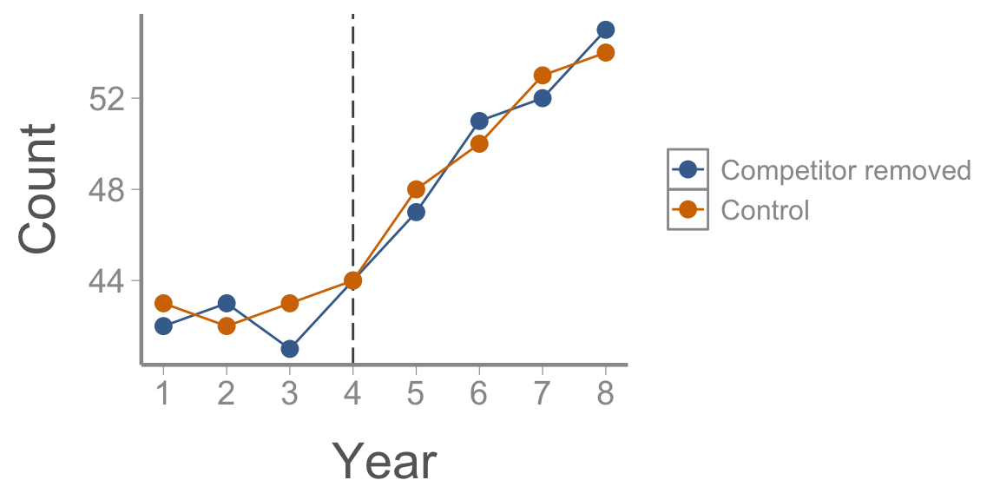
Question: Does our data provide evidence that the species compete?
The purpose of controls are to eliminate all sources of variation except the treatment
Although straightforward in concept, creating suitable controls that meet the consistency assumpstion is often very challenging in practice
Are the following examples adequate controls?
To test the effects of an experimental drug, researchers capture individuals and inject the drug via a syringe. Control individuals are not captured or given the drug. Survival of both groups is monitored
Researchers are trying to establish a new population of an endangered species via translocation to restored habitat. To test reproductive success is lower in the restored habitat, researchers monitor nests of translocated and non-translocated individuals
Researchers test the effectiveness of a new pesticide by spraying randomly selected plants and not spraying others. Insect damage is quantified on both groups
The three main elements of experimental design are:
Confounding cannot be eliminated in un-replicated experiments
Allows quantifying within and among group variation, necessary for statistical tests
More replication = better. Why?
Can be challenging/impossible in large-scale field experiments
The three main elements of experimental design are:
Replication
Randomization
Random selection of sampling units produces representative samples
Random allocation of treatments to experimental units produces exchangeable groups
Alternative sampling methods (stratified, clustering, systematic) are sometimes preferred to complete randomization
When sample sizes are small, randomization can result in inadequate interspersion; alternative designs often necessary
The inability to randomize treatments is what distinguishes manipulative experiments from quasi-experiments and observational studies. What is the consequence for inference?
The three main elements of experimental design are:
Replication
Randomization
Controls
Controls are necessary to evaluate response in the absence of treatment
Important in manipulative and observational experiments
Suitable controls eliminate all sources of variation except the treatment effect. Not always easy/possible to achieve
The three main elements of experimental design are:
Replication
Randomization
Controls
Well-designed experiments are essential to test hypotheses
Plan ahead! Design choices must be made before data collection begins
No amount of fancy statistical methodology can compensate for a poorly designed experiment!
Other considerations (sample sizes, independence, logistical constraints, appropriate response variables) are also important
Do manipulative experiments guarantee estimates of causal effects?
Next time: Linear models part 2: categorical predictor w/ >2 levels
Reading: Fieberg chp. 3.6
Causal inference from observational studies will be the focus of lecture?
In other words, to distinguish between causal vs. confounding effects
In other words, to distinguish between causal effects vs. noise